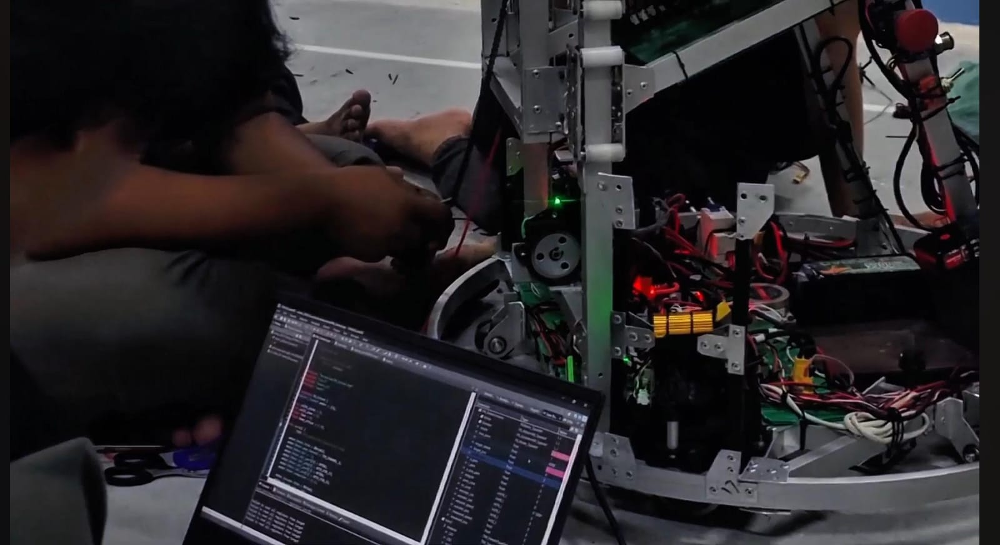
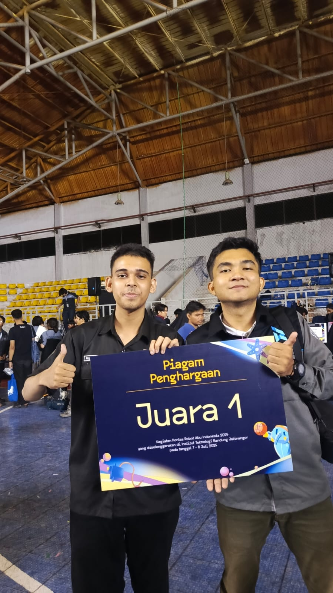
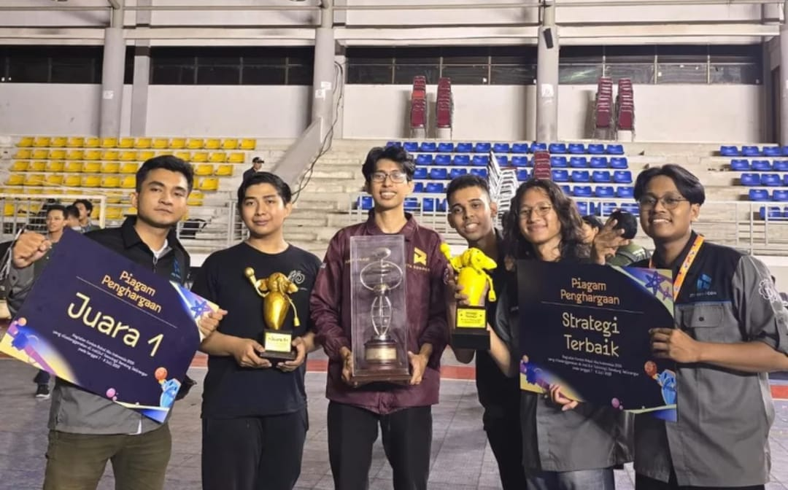

Basketball Robot
KRI ABU Robocon 2025A high-speed robot that throws basketballs into a hoop with precision. Won 1st place nationally and Best Strategy Award.
Problem
Design a ball-throwing mechanism with consistent accuracy under competition conditions, coordinating multiple distributed controllers.
What I did
Wrote STM32 firmware for the throwing mechanism and robot kinematics, synchronized distributed controllers via CAN bus, UART, and Ethernet UDP.
Stack
STM32 · CAN Bus · UART · Ethernet UDP


